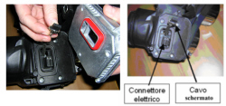

5540BO CHECK THE SPEED SIGNAL WIRING CONTINUITY INSIDE THE MASTER HEADLAMP
- Path
- Test > 55 ELECTRICAL EQUIPMENT > 5540 EXTERIOR LIGHTING > 5540B HEADLAMPS > 5540BO CHECK THE SPEED SIGNAL WIRING CONTINUITY INSIDE THE MASTER HEADLAMP
- Kind
- test / check procedure
- Applies to
- all engines; all production periods
- Interactive page
- https://sloeber94.github.io/elrnDB-fCrm/en/#/194003975
Applies to: all engines; all production periods
STEP | CHECK TO BE PERFORMED | RESOLUTION IF THE CHECK IS NOT OK |
|---|---|---|
1 | Remove the headlamp Op. 5540B81 LEFT GAS DISCHARGE LIGHT CLUSTER - R.R. Disconnect the control unit from the headlamp Connect the diagnostic tester in ohmmeter mode and check the continuity between Pin 10 of the headlamp 14-way connector and pin 15 of the control unit connector | Replace the headlamp |
2 | Replace the Ballast control unit Op. 5540B42 CONTROL UNIT OF ONE GAS DISCHARGE LIGHT CLUSTER R R |
